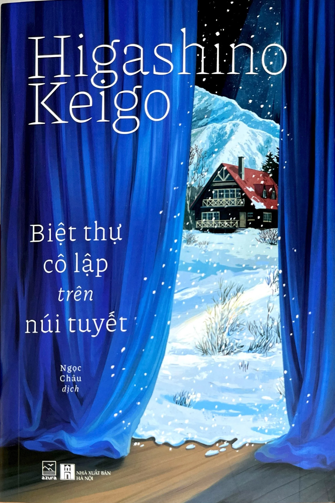

REVIEW SÁCH
BIệt thự cô lập trên núi tuyết
Nhận xét của mình
Mở đầu bằng 7 nhân vật trúng tuyển cho một vở kịch được tập trung tới một biệt thự ở trên một thảo nguyên Họ không được thông báo gì về vở kịch, họ phải tự nhập vai, tự viết nên vở kịch theo yêu cầu của đạo diễn, đồng thời phải tự lo liệu và sống tập thể trong biệt thự 4 ngày. Chúng ta sẽ đứng dưới góc nhìn của cậu Kuga (ở đây 7 nhân vật có tên khá dài, mọi người đọc kĩ để phân biệt nhé) Với một vở kịch trinh thám, 7 nhân vật tò mò vì không biết ai sẽ là "người bị giết" và "hung thủ" sẽ được bổ nhiệm cho ai. Án mạng bắt đầu xảy ra, ai cũng háo hức truy tìm vết tích mà nhân vật "hung thủ" để lại qua những tờ giấy nhưng rồi án mạng lại xuất hiện vào đêm kế tiếp, khiến họ không nghĩ đây là một vở kịch nữa. Và rồi những người còn sống sót bắt đầu đưa ra các giả thuyết và suy luận của mình về "vở kịch" này, liệu nó có phải vở kịch không? Đối với mình, mình thấy cuốn này khá ổn, nội dung sẽ không cao trào lắm. Câu chuyện nó chỉ trong vỏn vẹn 4 ngày ở trong căn biệt thự của các nhân vật rồi xảy ra án mạng và xuất hiện những bí ẩn mà họ phải phân tích và suy nghĩ. Mình thấy nó cứ Conan thế nào, mô tuýp mình đọc mình khiến mình liên tưởng đến Conan. Đoạn kết cũng khá hay, cũng bất ngờ nhưng chỉ là cũng thôi, mình thấy không ấn tượng lắm.
🛍️ Tìm mua cuốn sách
Bạn có thể tham khảo giá tại các nhà sách online: